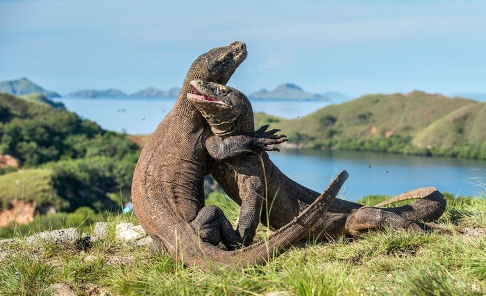
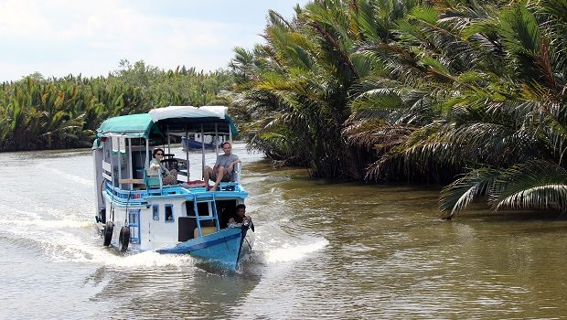

Naturaleza y vida silvestre
Parque Nacional de Komodo: Hogar de los dragones de Komodo, el lagarto más grande del mundo. Ofrece también paisajes espectaculares como la famosa Pink Beach y el mirador de la Isla de Padar.
Parque Nacional de Tanjung Puting (Borneo): Ideal para ver orangutanes en su hábitat natural.
Volcán Bromo: Un volcán activo en Java Oriental que se puede visitar, incluso caminar cerca de su cráter humeante.
.jpg)
Raja Ampat: Un archipiélago conocido por su increíble biodiversidad marina, con oportunidades de buceo y snorkel de clase mundial, además de hermosas playas aisladas.

Cultura e historia

Borobudur: El templo budista más grande del mundo. Se recomienda visitarlo al amanecer para disfrutar de las mejores vistas.

Yogyakarta: Un importante centro cultural en Java, rodeado por los templos de Borobudur y Prambanan. La ciudad es conocida por su arte, batik y gastronomía.
Gunung Padang : Un sitio arqueológico con una pirámide que podría ser la más antigua del mundo .
Tana Toraja:Famosa por sus ceremonias tradicionales y sus enterramientos

Templo de Prambanan: Un complejo de templos hindúes del siglo IX conocido por su arquitectura clásica y torres imponentes.